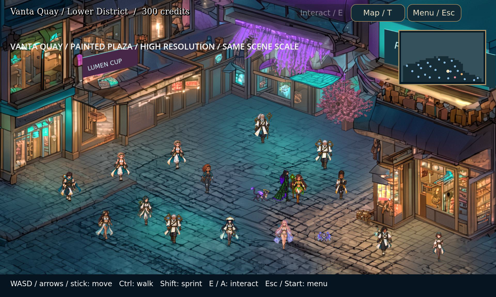

PLOT SYNOPSIS
When the machines turn.
Vanta Quay runs on machines. A secret society has just turned that dependence against the city.
When a virus spreads through the city’s technology, familiar streets become dangerous. Vexa has gaps in her memory and no easy answers about her past. With Mote beside her, she joins a crew trying to protect the people caught in the outbreak.
Each member has a reason to stay in the fight. Kade brings his dual blades, Astra holds the line, Zera fights with drones, and Rook brings the perspective of a veteran. As the crew follows the trail beyond Vanta Quay, the question changes: stopping the machines is only the first step. They still have to find the people who set them loose.
The opening follows the defense of the crew’s base and their first steps aboard the Peregrine, the airship that will carry them beyond the city.
Watch the trailer ↗